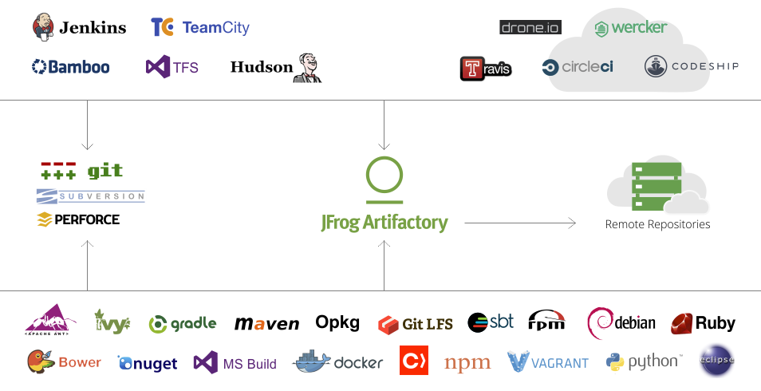

Introduction to Artifactory
"As the first, and only, universal Artifact Repository Manager on the market" Artifactory from JFrog can help you solve two frequently encountered automation problems in application development and deployment.
First up, Artifactory will work as a repository manager for your project's custom developed or externally consumed dependency libraries or packages or modules. This provides reliability and efficiency through local caching of those external dependencies.
Secondly, Artifactory will store the compiled version of your applications for distribution. Git stores the source code, but the compiled artifacts go in to Artifactory for distribution to your application servers.
Those sound similar but come down to using the same artifacts in two different ways. First was using the artifact as a dependency to compile other applications. This might be a Java JAR to calculate taxes on purchases. The second is about runtime deployment of a Java WAR to a J2EE application server.
Repository mirroring
A common use case for Artifactory is to be a proxy in locked down enterprises. Get Artifactory up and running and then configure Maven (a Java build and dependency management tool) or Ruby Gems to be requested from the Artifactory server. The security team will whitelist the single Artifactory server to have outside access and developers' machines can remain safely locked down. If Artifactory doesn't have the requested resource, it will download it and store it for future usage.
Having Artifactory run as your proxy does provide some ease of use as a proxy, but the biggest gains are seen on subsequent requests. You are not going to "download the Internet" from the actual Internet. Instead, after the first request for a library, you will be downloading the library from your local Artifactory instance! Depending on the size and scope of your application this can save seconds or even save minutes from each build cycle.
With great mirroring comes great disk space. A well used Artifactory server can chew through terabytes of storage. Make sure you have attached enough storage to your instance for the load it will handle. One alternative in the Pro version of Artifactory is making use of Amazon AWS S3 storage. This will give you easily expanding storage should you need it.
Types of repositories
In my experience, if a programming tool has a versioning based system for releasing artifacts, then Artifactory has built the ability to properly serve those versioned artifacts. Review the bottom two rows of the graphic below. Those are most of the types of artifacts you can upload to Artifactory and then properly serve back out to your users.

The most useful of the list I find to be:
- Debian/apt mirroring
- RPM/Yum mirroring
- Maven mirroring
- Ruby Gems mirroring
- Manually uploading files for HTTP access <-- My favorite!
- Vagrant boxes
- Eclipse plugins
The versions of Artifactory
Be aware that Artifactory has mulitple versions, mostly breaking down between the free OSS version, the paid Pro versions or a Cloud based version. This demo is using an evaluation copy of Artifactory Pro which has support for numerous types of repositories, including what we will be using today.
Most every tool in the Automation Tools Bootcamp is free or easily successful with the free version. But with Artifactory I want to steer you to one of the paid versions. The biggest gain is the support for the extra types of repositories. And rationalizing the payment for Artifactory comes back pretty quickly using the mirroring options. If build times go from 5 minutes to 2 minutes by removing external downloads, in each build you are saving 3 minutes of your developers' time. The break-even point is easily obtainable there and makes purchasing a Pro version of Artifactory an easy recommendation.
Alternatives to Artifactory
Artifactory is not the only player in the repository management game. It is nice to have choices and you might have better success with one of these.
- Nexus by Sonatype
- Cloudsmith
- PackageCloud
- ProGet
- Bintray by JFrog if you simply want to serve out artfacts
Workout
We are going to complete the following actions with Artifactory
- Artifactory is already baked in to the class VM as a Docker container.
- Start up an Artifactory server using a Docker container.
docker run --name artifactory -p 80:80 -p 8081:8081 -p 443:443 -p 5000-5002:5000-5002 jfrog-docker-reg2.bintray.io/jfrog/artifactory-registry:latest - Open the Artifactory web server. It will automatically give you a new browser tab.
- Artifactory will prompt you for a license key in a yellow message at the top of the page. The key is available as a "pinned" message in the
#generalroom on Automation Tools Slack. - Change the default login credentials from
admin/passwordto have a different password. - Now we will make our own "Generic" repository called
bootcamp. - Then Deploy a file to the generic
bootcamprepo using the web interface. Any file, try a zip file. Then download the file from Artifactory. Notice the download count - helpful to gauge your artifact's popularity or usage. - This container for Artifactory already has a Docker registry enabled! Let's use that now.
- Because Artifactory now has the focus of our terminal session, start another and
vagrant sshin to the class VM a second time. Or, if you are using tmux, split your session window in half andvagrant sshfrom there. - Go in to the
dockerdirectory with acd /vagrant/docker. - Now we're going to
docker loginto the Artifactory instance with adocker login localhost:5002and use theadminuser and your password to connect. - Now tag the
atbcontainer image for the Artifactory server withdocker tag atb localhost:5002/atb - The prep work is done, let's push the container image up.
docker push localhost:5002/atb - Watch each layer of the container upload, and then view it in the Artifactory web interface under the
docker-dev-local2repository.